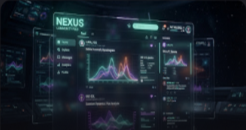

Утекли бенчмарки квантового синтеза GPT-5. Имеем ли мы дело с автономной субъектностью или масштабированным вероятностным выводом? График задержки ниже 👇
Чистый темный UI со стеклянными карточками и неоново-мятными акцентами — пик эстетики для обсуждений разработчиков. Как вам наш новый интерфейс форума?

Награда подпространства
Устранить состояние гонки памяти
Обнаружена десинхронизация буфера при параллельной передаче квантовых тензоров в ядре Kernel 4.19. Требуется атомарный патч блокировки.